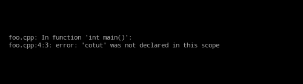
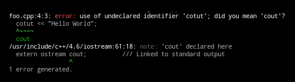

By Aaron Bloomfield / aaron@virginia.edu / @bloomfieldaaron
github.com/aaronbloomfield/pdr
// Java
public class HelloWorld {
public static void main(String [] args) {
System.out.println("Hello World!");
}
}
// C++
#include <iostream>
using namespace std;
int main() {
cout << "Hello World" << endl;
return 0;
}
|
|
// use iostream library
#include <iostream>
using namespace std;
int main() {
int x;
cout << "Enter a value for x: ";
cin >> x;
return 0;
}
#include <iostream>
using namespace std;
int main() {
// note the spelling mistake on the next
// line where 'cout' is spelled 'cotut'
cotut << "Hello World";
return 0;
}
| g++: |  |
| clang++: |  |
#include <iostream>
using namespace std;
ret_type func_name(int a, int b, ...) {
<function body>
}
int main() {
...
z = func_name(x, y, ...);
...;
return 0;
}
|
|
ret_type func_name (int a, int b, ...);
#include <iostream>
using namespace std;
int max(int a, int b); // prototype
int main() {
int x=37; int y=52;
cout << max(x,y) << endl;
return 0;
}
// actual function implementation
int max(int a, int b) {
return (a>b) ? a : b;
}
public class IntCell {
public IntCell() // default constructor
{ this(0); }
// one parameter constructor
public IntCell(int initialValue)
{ storedValue = initialValue; }
// accessor member function
public int getValue()
{ return storedValue; }
// mutator member function
public void setValue(int val)
{ storedValue = val; }
// private data member
private int storedValue;
// main()
public static void main(String [] args) {
IntCell m1 = new IntCell();
IntCell m2 = new IntCell(37);
System.out.println(m1.getValue() + " " +
m2.getValue());
}
}
#include <iostream>
#include "IntCell.h"
using namespace std;
int main( ) {
IntCell m1; // calls the default constructor
IntCell m2( 37 );
cout << m1.getValue( ) << " " << m2.getValue( )
<< endl;
m1 = m2;
m2.setValue( 40 );
cout << m1.getValue( ) << " " << m2.getValue( )
<< endl;
return 0;
}
#ifndef INTCELL_H
#define INTCELL_H
class IntCell {
public:
explicit IntCell( int initialValue = 0 );
int getValue( ) const;
void setValue( int val );
private:
int storedValue;
int max(int m);
};
#endif
#include "IntCell.h"
IntCell::IntCell( int initialValue ) : storedValue( initialValue ) {
}
int IntCell::getValue( ) const {
return storedValue;
}
void IntCell::setValue( int val ) {
storedValue = val;
}
int IntCell::max(int m){
return 1;
}
#ifndef INTCELL_H
#define INTCELL_H
class IntCell {
public:
explicit IntCell( int initialValue = 0 );
int getValue( ) const;
void setValue( int val );
private:
int storedValue;
int max(int m);
};
#endif
#include <iostream>
#include "IntCell.h"
using namespace std;
int main( ) {
IntCell m1; // calls the default constructor
IntCell m2( 37 );
cout << m1.getValue( ) << " " << m2.getValue( )
<< endl;
m1 = m2;
m2.setValue( 40 );
cout << m1.getValue( ) << " " << m2.getValue( )
<< endl;
return 0;
}
(diagram)
#ifndef RATIONAL_H
#define RATIONAL_H
class Rational {
public:
Rational(); // default constructor
~Rational(); // destructor
Rational(int numerator, int denominator);
void print() ;
Rational times(Rational b);
Rational plus(Rational b);
Rational reciprocal();
Rational divides(Rational b);
private:
int num; // the numerator
int den; // the denominator
int gcd(int m, int n);
};
#endif
#include "Rational.h"
#include <iostream>
using namespace std;
// default constructor: initialize to 0/1
Rational::Rational() : num(0), den(1) { }
void Rational::print() {
if (den == 1)
cout << num << "" << endl;
else
cout << num << "/" << den << endl;
}
Rational Rational::times(Rational b) {
return Rational(num * b.num, den * b.den);
}
Rational::Rational(int numerator, int denominator) {
if (denominator == 0) {
cout << "Denominator is zero" << endl;
int g = gcd(numerator, denominator);
num = numerator / g;
den = denominator / g;
}
#include "Rational.h"
int main() {
Rational x, y, z;
// 1/2 + 1/3 = 5/6
x = Rational(1, 2);
y = Rational(1, 3);
z = x.plus(y);
z.print();
// ... other code very much like above
}
define TRUE 0
if(TRUE == 0) {...}
#define MY_OBJECT_H
define PI 3.14159
...
area = PI * r * r;#define FOO
#ifdef FOO // is true!
#ifndef FOO // is false!
(table)
(table)
(diagram)
(image)
(diagram)
(image)
(diagram)
(image)
(diagram)
(insert video) http://www.youtube.com/watch?v=UvoHwFvAvQE
int n = 30;
int * p;
*p = n; //ERROR!!!int *p=NULL; // better code, then add code to check for NULL value
void swap(int * x, int * y) {
int temp = *x;
*x = *y;
*y = temp;
}
int main() {
int a=0;
int b=3;
cout << "Before swap(): a: " << a << "b: "
<< b << endl;
swap(&b,&a);
cout << "After swap(): a: " << a << "b: "
<< b << endl;
return 0;
}
// declare array of 10 elements
int someArray[10];
// declare a pointer to int
int *value1_address = &someArray[3];
int main() {
int n;
// read in a value from the user
cout << "Please enter an integer value: " ;
cin >> n;
// use the user's input to create an array of int using new
int * ages = new int [n];
// use a loop to prompt the user to initialize the array
for (int i=0; i < n; i++) {
cout << "Enter a value for ages[ " << i << " ]: ";
cin >> ages[i];
}
// print out the contents of the array
for(int i=0; i<n; i++) {
cout << "ages[ " << i << " ]: " << ages[i];
// finished with the array
//clean up the memory used by calling delete
delete [] ages;
return 0;
}
(image)
#include <string>
using namespace std;
int main() {
string * pointerToString = new string("hi");
// some code that uses pointerToString here
delete pointerToString;
return 0;
}
Rational r;
r.num = 4;Rational *r = new Rational();
r.num = 4;r->num = 4;
#include <iostream>
using namespace std;
class Foo {
int x, y;
};
int main() {
cout << "sizeof(int): " << sizeof(int) << endl;
cout << "sizeof(Foo): " << sizeof(Foo) << endl;
Foo *foo = new Foo();
Foo *bar = new Foo();
cout << "1st Foo: " << foo << endl;
cout << "2nd Foo: " << bar << endl;
int diff = ((int)bar)-((int)foo);
cout << "Difference: " << diff << endl;
delete foo;
delete bar;
return 0;
}Result:
sizeof(int): 4
sizeof(Foo): 8
1st Foo: 0x6a0670
2nd Foo: 0x6a0680
Difference: 16
(image)
class ListNode {
public:
// ...
private:
ListNode *next, *previous;
friend class List;
};
Foo() {
ListNode* list = new ListNode();
}
Foo() {
ListNode temp;
list = &temp;
}
List sampleList
List & theList = sampleList;
void swap(int * x, int * y) {
int temp = *x;
*x = *y;
*y = temp;
}
void swap(int & x, int & y) {
int temp = x;
x = y;
y = temp;
}
int main() {
int a=0;
int b=3;
cout << "Before swap(): a: " << a << "b: "
<< b << endl;
swap(b,a);
cout << "After swap(): a: " << a << "b: "
<< b << endl;
return 0;
}
class Square {
public:
// constructors, etc. would be here
int sideLength;
};
// other code omitted for space reasons
int main() {
Square *squarePtr = new Square(1);
int length = squarePtr->sideLength;
// equivalent to saying (*squarePtr).sideLength
return 0;
}
// other code omitted for space reasons
int main() {
Square square = Square(1);
Square & squareRef = square;
int length = squareRef.sideLength; // uses a period
return 0;
}
class example1 {
...
public:
int *a;
};
...
example1 *c = new example1;
int x = 0;
(*c).a = &x; // assign address of x
c->a = &x; // defrerence c, then access a
(table)
int max(int a, int b);
void swap (int * x, int *y);
bool compare(Rational left, Rational right);
void swap (int &x, int &y);
bool compare(const Rational & left, const Rational & right);
Square * ptrToAnotherSquare = new Square(5);
Triangle *ptrToTriangle = new Triangle();
Circle *ptrToCircle = new Circle;delete ptrToAnotherSquare;
IntCell original; // constructor called
IntCell copy;
copy = original; // operator= called
class test {
static int idcount;
const int id;
int value;
public:
test();
test(int v);
test(const test& x);
~test();
test& operator=(const test& other);
friend ostream& operator<<(ostream& out, const test& f);
};
int test::idcount = 0;
test::test() : id (idcount++), value(0) {
cout << "calling test(); object created is " << *this
<< "; address is " << this << endl;
}
test::test(int v) : id (idcount++), value(v) {
cout << "calling test(" << v << "); object created is " << *this
<< "; address is " << this << endl;
}
test::test(const test& x) : id(x.id), value(x.value) {
cout << "calling test(&test) on " << *this << "; address is "
<< this << endl;
}
test::~test() {
cout << "calling ~test() on " << *this << endl;
}
test& test::operator=(const test& other) {
cout << "calling operator=(" << other << ")" << endl;
test *tmp = new test(other);
return *tmp;
}
ostream& operator<<(ostream& out, const test& f) {
out << "test[id=" << f.id << ",v=" << f.value << "]";
}
test bar(test param) {
return test(10);
}
test a();
cout << "attempted to create a: " << a << endl;
cout << "----------------------------------------" << endl;
test aa;
cout << "created aa: " << aa << endl;
cout << "----------------------------------------" << endl;
test b(1);
cout << "created b: " << b << endl;
cout << "----------------------------------------" << endl;
test *c = new test(2);
cout << "created *c: " << *c << " at " << c << endl;
test *d = new test;
cout << "created *d: " << *d << " at " << d << endl;
cout << "----------------------------------------" << endl;
cout << "about to invoke subroutine..." << endl;
test e = bar(*c);
cout << "finished invoking subroutine..." << endl;
cout << "----------------------------------------" << endl;
test f = b;
cout << "----------------------------------------" << endl;
cout << "about to delete a test object..." << endl;
delete c;
cout << "----------------------------------------" << endl;
cout << "assignment..." << endl;
aa = b;
cout << "----------------------------------------" << endl;
cout << "about to leave main..." << endl;